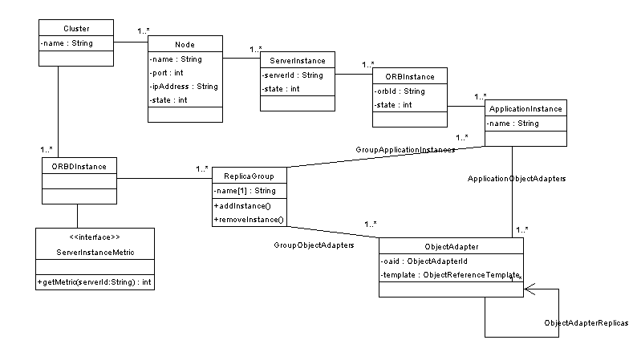
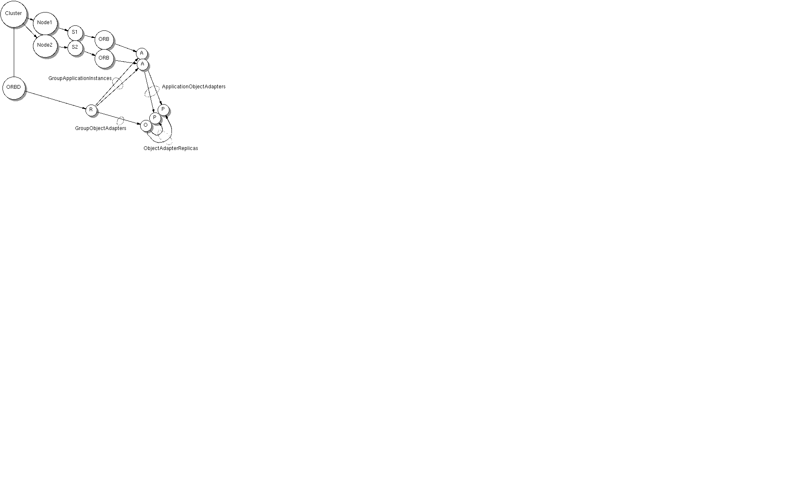
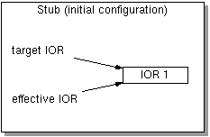
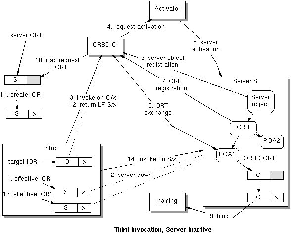

ORBD Architecture for S1AS8/EE
Draft 0.71
Ken Cavanaugh
Harold Carr
Table of Contents
Introduction 4
S1AS8/EE ORBD Operation 7
2.1. Main blocks in ORBD model 7
2.2. Plugin points for main blocks 7
2.3.Use Case: First Invocation, Server Running 7
ORBD Data Model 10
3.1. Getting ORT Information 11
3.2.General ORBD Operation 12
3.3. Constructing the Forwarded IOR 13
3.4. Contents of IORs 14
3.5.Session Beans need Persistent IORs 14
3.6. isLocal and Failover 15
State Maintenance 17
4.1.Starting and Stopping a Node 17
4.2.Starting and Stopping a Server Instance 18
4.3.Starting and Stopping an Application Instance 18
4.4.Starting and Stopping an ORBD 19
Fault Tolerance 20
5.1.Creation of an Object Adapter 21
5.2.Performing an Invocation on x 21
5.3.Impact of Orderly Shutdown 22
Load Balancing 23
Online Upgrades 26
Redundant ORBD 27
8.1.The Redundant Model 27
8.2.ORBD startup 28
8.3.Redundant ORBD operation 28
8.4. Location of ORBD 29
8.5. Replication viz-a-viz IOR Size 29
8.6. Interoperability with other app servers and clients 30
8.7.Allow users to not use ORBD 30
8.8. Limitation: cannot add more ORBDs after cluster created 31
Appendix A. Phased Implementation of S1AS8/EE ORBD 32
Appendix B. Template Creation 37
Appendix C. Future Versions 39
Appendix D. Rejected Alternatives 45
Appendix E. Smart Stubs are a Dumb Idea 46
Appendix F.Constructing IORs from multiple templates 49
Appendix G.Epochs for Online Upgrades 50
Appendix H.Servers Shedding Load and Avoiding Client Starvation 51
Appendix I. Other considerations 52
Appendix J. Data Model Constraints 56
Appendix K. A Tutorial on J2SE ORBD Operation 57
This document describes infrastructure for supporting scalability and availability (i.e., load balancing, fault tolerance and online-upgrades) for IIOP requests in S1AS8/EE. The general infrastructure is called ORBD (for historical reasons). However, as we describe the architecture it should become clear that ORBD is the component in the infrastructure that supports failover and other components support load-balancing.
To understand why an ORBD is useful, suppose an application is initially deployed on a single server instance, and then later migrated to a different pair of server instances for failover. If the original IOR referred directly to the single server instance it is impossible to make the change transparently. It is impossible to find all occurrences of the original IOR for arbitrary CORBA clients. It is also impossible for an application running on the app server that uses IOR stringification.
Instead, the principal idea is that server IORs contain ???persistant??? references to ORBDs which then redirect requests to appropriate servers. In other words, we "nail down" the address of one part of the system, the ORBD, so that other parts may have much more dynamic behavior. We then highly optimize the system based on special domain knowledge (namely DAS and other information, such as dynamic load information) so that ORBD does not become a bottleneck).
The other principal idea is that once the ORBD has redirected a request, clients will hold IORs that contain addresses for replicated servers. The client ORB is then able to choose which replica to use based on locality and load information.
Top-level points:
ORBD functionality is lightweight.
The use case for ORBD is failover (NOT load balancing, although ORBD bootstraps the load balancing process by providing IORs which contain the locations of replicas).
CorbaContactInfoList is the load-balancing point (in the client).
An ORBD instance will be colocated with every server instance (i.e., ORBD does NOT need to be a separate process, but may be if so desired).
ORBD leverages DAS. ORBD caches information for efficiency.
ORBD is NOT responsible for restarting servers.
ORBD maps invocations on location independent IORs to their CURRENT location. The actual location may change at any time in any way. ORBD transparently finds the current location and forwards request appropriately.
Load balancing info is piggybacked on server replies (it may be multicast in future versions).
ORBD provides transparent IIOP interop requirements.
Why is it better?
The ORBD-based ORB/EJB failover design supports the colocated (web & ejb in the same tier) 90% case while also providing infrastructure that will allow us to leap-frog the competition in future
ORBD supports sophisticated call routing / load balancing.
Ease-of-use: The user will not have to generate different "smart" stubs for HA..
No bottle necks, scalable & distributed design: colocated ORBDs in each serve process.
ACC and web container use of EJBs is the main use case for IIOP. The ACC and web container do not have full access to the DAS information. Use of ORBD provides transparent IIOP failover in the CORBA layer, rather than imposing DAS access/caching requirements on the ACC and web containers.
Why this design is better than S1AS7.0?:
ORBD takes the 90% case into some areas that the non-ORBD approach does not handle (e.g. ACC calling into a replicated application that is performing an online upgrade).
ORBD integration with S1AS8/EE
ORBD is integrated with the overall clustering mechanisms in the application server to handle failover and load-balancing for IIOP, HTTP, JMS, etc., as a whole. This leverages the S1AS8/EE mechanisms in the areas of health checks, monitoring availability of instances and load metrics exchange.
Overview of Document
The remainder of the paper presents a detailed view of S1AS8/EE ORBD architecture, starting with the data model of S1AS8/EE from the ORB's point of view. We then look at how this data model and the ORBD operation presented earlier operate with respect to state maintenance, fault tolerance, load balancing, online upgrades and redundant ORBDs. Appendices give fine-grained details necessary to implement ORBD. (These appendices are not necessary for a general understanding of the ORBD.)
Background Assumptions
This document assumes a basic familiarity with Interoperable Object References (IOR), the Portable Object Adapter (POA), Portable Interceptors (PI) and the Object Reference Template (ORT) as described in the CORBA 3.0 architecture specification. It also assumes familiarity with the CORBA mechanisms used to support load-balancing, fault tolerance and online-upgrades: client-side stub operation, addressing and request retry mechanisms, ORT exchange and LOCATION_FORWARD . This document contains a section ???A Tutorial on J2SE ORBD Operation??? which illustrates these mechanisms with several use cases. We emphasis that this material is NOT specifying the S1AS8/EE ORBD. It IS a tutorial and can be safely skipped if one already understands the basic mechanism.
Client: the client makes invocations on RMI-IIOP references. Those invocations need to continue to work in the presence of failures and online-upgrades. The invocations should be load-balanced across server instances.
Server: the server is managed by the DAS.
ORBD: enables an IOR to survive a wide range of faults and administrative changes in application configuration.
Client: CORBAContactInfoList : client-side dynamic load-balancing plug-in point. Enables flexibility in routing policies and the ability for administrators to use different algorithms or tune parameters for the default ones we provide. CorbaContactInfoList abstracts IORs. It is responsible for updating the effective IOR and for selecting an appropriate address for an invocation.
Server: ServerRequestInterceptor and/or ServantManager: these points can do load-shedding, add server load metrics as reply service contexts or multicast load metrics.
ORBD: ServerInstanceMetric: this is the main point that the ORBD gets information on the state of the cluster.
This use case makes the following assumptions:
N application server replicas have all been activated and completed their registration and ORT exchange with M redundant ORBDs.
The N application server replicas each created IOR O1,2,...,M/x and bound that IOR in naming using the same name.
The IOR has been resolved from naming resulting in a stub with its target IOR and effective IOR fields both set to O1,2,...,M/x.
The following figure shows the basic operation of the S1AS8/EE ORBD when a client makes an initial invocation on a stub:
The client invokes a method on the stub. The stub uses the effective IOR O1,2,...,M/x to service the invocation. The client ORB selects a profile from the IOR, say O1/x.
ORBD receives the request.
ORBD maps the request to the appropriate ORT.
ORBD creates a new IOR, S1,2,...,N/x using the object ID x from the request.
ORBD returns a LOCATION_FORWARD response with IOR S1,2,...,N/x.
The stub sets its effective IOR field to S1,2,...,N/x. The client ORB transparently retries the request using the new IOR. The client ORB selects a profile from the IOR, say S1/x.
The request is sent to server S1.
If S1 is not available the a different profile would be chosen from the effective IOR and the request would be transparently retried, in this example to S2 and then to S3.
If all SN are not available the client ORB would fall back to the target IOR and select a profile, say O1. If ORBD O1 is not available then a different profile from target IOR is selected, possible resulting in requests directed to O2, ..., OM.
ORBD maintains its own information model for two reasons:
1. To cache information locally for performance
2. To provide only the information needed for ORBD.
The only state the ORBD maintains is a map of server-id/orb-id/poa-id to ORT (there is an ORT for each EJB type).
The following diagram gives a sketch of the data of interest to ORBD. In part the data represents the natural containment hierarchy from the Cluster down to a particular object adapter instance. Here we are assuming that each EJB type has its own object adapter (a POA instance). Also note that we have introduced an ApplicationInstance into the model to represent a grouping of related EJB types that form some sort of application.

For each replica, ORBD only needs it ObjectReferenceTemplate (ORT). The DAS has all of the information globally available that is used to create (at deployment time) beans (i.e., IORs), which results in the creation of the object reference template.
The ORBD in each app server instance computes ORTs using the instances DAS cache. Instead of updating multiple ORBD instances with ORT information, we update DAS, which makes the information available in all server instances. This does not assume that DAS is always running. There must have been sometime when DAS was running so that the system could be installed. DAS will also be needed whenever major changes in deployment are needed, such as adding or removing nodes or server instances, or redeploying applications.
Rejected alternatives:
1. Direct exchange between each server instance and the replicated
ORBD.
2. At each bean deployment, register the ORT for the deployed bean (or
replica) with the DAS. Each server instance then has access to the
ORT. The ORT is also persistent, and the ORT for a persistent POA
will be valid between restarts of the POA or the server instance
that contains the POA.
What this second possibility is, is simply using the DAS to mediate
the template exchange between ORBD and the server instance. This
avoids direct communication between ORBD and the server instances.
The primary function of ORBD is to redirect incoming requests to an appropriate server instance in a cluster. ORBD supports this function by maintaining a snapshot (not necessarily perfect) of the state of the nodes and server instances in a cluster. State maintenance in a cluster where different components are starting and stopping is a significant part of the ORBD architecture and will be discussed in detail in later sections.
In order to understand how ORBD handles an incoming request, we first need to look at how IORs are created. All IORs are created from a POA instance using the create_reference_from_id method, which is supplied type id and object id arguments. The object id is a unique identifier for the IOR in the context of this particular POA. In the app server, this is typically derived from the primary database key for the EJB state.
create_reference_from_id delegates to the make_object method on the ORT instance associated with the POA.
The POA is created by the container whenever an EJB type is deployed in the container. Each POA instance gets part of its template created from the ORB that created the POA. An ORBD IORInterceptor is also installed in the ORB. All of this operates as follows to create the POA:
parent.create_POA( name, policies) is called on the parent of the POA being created (which may be the ORB's root POA, which is always present).
The new POA constructs its ObjectKeyTemplate oktemp
The new POA calls ORB.createIORTemplate( oktemp ). The ORB then uses the ObjectKeyTemplate oktemp to create an IORTemplate, and adds profile templates for each protocol registered with the ORB to the IORTemplate. The IORTemplate is returned.
The POA creates its ObjectReferenceTemplate from the IORTemplate returned in step 3.
The ORBD IORInterceptor components_established method is called.
The interceptor gets the POA instance's current ObjectReferenceTemplate (which was just created in step 4.) and registers this template with ORBD.
ORBD creates/finds its own template that corresponds to the one being registered and returns that template.
The interceptor sets the current factory for the POA instance to the one returned from ORBD.
At this point, any create_reference call to the POA results in an IOR that is handled by ORBD.
Incoming requests for ORBD are directed to a particular ObjectAdapter. Each ObjectReferenceTemplate (the template field in the ObjectAdapter) is identified by server ID, orb ID, and object adapter ID. This triple must be unique throughout the cluster. The basic operation of ORBD in handling an incoming request can then be summarized as:
Get the (server ID, orb ID, object adapter ID) from the incoming request.
Find the ORBD ObjectAdapter using (server ID, orb ID, object adapter ID).
Get the set of applicable ObjectAdapter instances by applying the ObjectAdapterReplicas relation to the ORBD ObjectAdapter for this request.
From the templates for this set of ObjectAdapter instances, construct an IOR.
Use the ServerRequestInterceptor to send the IOR back to the client as a LOCATION_FORWARD reply, causing the client to transparently redirect the invocation to the new IOR. (Note, this redirection only occurs on initial requests or after failures or redirections from the server.)
Exactly how the forwarded IOR is constructed is the subject of the next section.
We have defined a ServerInstanceMetric interface, in the data model, which is intended to represent the capability of a server instance to handle additional load. We assume that 0 indicates an unloaded server instance and MAX_INT represents a server instance that cannot accept additional load (which could be a server instance that is not running). How this is computed is outside the scope of the ORBD design. The implementation of ServerInstanceMetric is pluggable in ORBD.
In a highly-available system ORBD will contain a collection of ORTs corresponding to the server and application replicas under various loads. Given this collection, the ORBD makes a choice in constructing the IOR based on the ServerInstanceMetric. Two possibilities are:
Pick the template whose ObjectAdapter's ServerInstance has the lowest metric. Construct the IOR using that template.
Sort the list of templates into lowest to highest order based on the ObjectAdapter's ServerInstanceMetric values. Construct an IOR using all of these templates in such a way that a client will try the profiles corresponding to the lower metric values first.
Other variations are possible too, such as only using those templates that correspond to server instances that are actually running at the time the call is made. In this paper we use option 2, as this is the best option for spreading the load of handling failures to the clients, rather than just to the ORBD.
The ServerInstanceMetric may be implemented in a variety of ways. It may cache information inside an object plugged into ORBD, or it may simply contact an external agent for load information. Design of the ServerInstanceMetric is outside the scope of the ORBD architecture. In any case, the ServerInstanceMetric implementation is plugged into the initialization of ORBD itself.
Two profiles. One profile contains TAG_ALTERNATE_IIOP_ADDRESS TAGGED_COMPONENTS with server instance addresses. The other profile contains TAG_ALTERNATE_IIOP_ADDRESS TAGGED_COMPONENTS with ORBD addresses. The ORBD profile also contains a TAGGED_COMPONENT which indicates it is a profile for an ORBD. That way our CorbaContactInfoList will only use it after trying all server instance addresses. A foreign client would not necessarily be smart but it would be operational.
The S1AS7 EJB to POA mapping assumes that session beans are mapped to transient POAs. The template for a transient POA changes (e.g., time-dependent element) every time the POA is instantiated, and so it cannot be stored in DAS.
To enable fault tolerance, load balancing and online upgrades for all IORs, the app server should not use transient POAs. All references should be be created with POAs with a PERSISTENT policy. In this case the app server would manage transience itself.
Note: by definition, a transient POA can never be re-started and produce the same object references. It is possible that we do not want to use transient POAs for stateless session beans in the presence of replicas, because the lifetime of the replica can be less than the lifetime of the object reference, and the transient POA is tied to the lifetime of the replica. ORBD allows us to get around this problem too, but all ORBD replicas need to be updated with newly created transient POA templates, which is potentially expensive if there are a lot a replicas.
Util.isLocal determines the locality of an object on the host, port, and server ID of the effective target IOR. For failover we use the ORBD addresses in the IOR, but make a local call to the local ORBD (when available).
Scenario: a client holds an IOR to an EJB which is colocated in the same JVM. The IOR is saved into some persistent state (file/DB).
Case 1: The target EJB is a Stateless SessionBean (transient POA). The server crashes, restarts and reads the saved IOR. The client component invokes the remote IOR (note that it contains the transient port of the previous incarnation of the server). A good way to support this is to make all IORs persistent and manage transience in the app server itself.
Case 2: The target EJB is an EntityBean (persistent POA). The server crashes, and failsover to another JVM with a different persistent port. The 2nd JVM loads the client component and EntityBean, The client reads the saved IOR and invokes on it. The client's effective target IOR still points to the downed server. It invokes and fails. So it tries other servers or fails back to the ORBD. If it fails back to the ORBD then the ORBD will construct a new effecive target IOR which will contain the failed and restarted/moved server's new address.
Note that if isLocal returns true then the invocation will work because the EntityBean can be activated in the second server.
This assumes that there is a singleton ORB instance in a JVM, and IORs are "connected" after deserialization.
ORBD needs to be informed about state changes in nodes, server instances, application instances, and object adapters. Some of these can be handled within the ORB framework while others will require access to configuration information maintained in the cluster and to state changes in entities such as nodes.
Since JMX is the basic mechanism for management and monitoring in S1AS, ORBD uses JMX to obtain information about the state of nodes, server instances, and applications. Some events are detectable within the ORB framework itself, such as the ServerInstance starting and terminating cleanly (via Portable Interceptors and other mechanisms). The ORB provides all necessary information about the object adapters running inside an ORB instance (note, we are assuming a single ORB per server instance).
Grouping of object adapters into applications is not directly determinable from the ORB itself, as the concept of an application is at the EJB container level, and at the administration data level. We could decide to establish a convention for POA usage such that each application instance has a separate POA manager. Further details here await the detailed changes in the EJB container design.
State changes in nodes are tracked by ORBD to allow for accurate handling of node failure. The interesting cases include:
A running node fails. In this case, all server instances, application instances, and object adapters under the node can be presumed to fail as well. The ServerInstanceMetric must go to MAX_INT for server instances contained in the failing node, so that the failed nodes will not be chosen by a client. ORBD will need to clean up all data configured associated with the failed node. This includes:
Changing the state of all server instances and ORBs to shut down.
Destroying all object adapter instances associated with the node.
A running node is shutdown. Here we want a graceful shutdown of all components. ORBD will stop forwarding requests to any object adapter contained in the node. Each server instance will need to shutdown its ORB instance, which will cause any pending requests to be completed, and prevent new pending requests from starting.
A configured node starts. ORBD observes the startup of the node (via the Server watchdog object) so that it is prepared for the startup of contained server instances, application instances, and object adapters. ORBD will not dispatch traffic to any of the contained components until that component is up and running. (Note that this may affect the determination of the server metric, in that a ServerInstance may be up and running with a low metric before an ApplicationInstance is fully initialized. In this case it may be necessary to increase the server metric applied to an object adapter in the ApplicationInstance until the ApplicationInstance is fully initialized.)
A new node is configured. This is similar to the previous case. The only difference is that a new node may be configured while the cluster is fully up and running, but we do not think matters for ORBD operation.
A running server instance fails. ORBD finds out about this by monitoring a server watchdog object. ORBD marks all application instances as down and destroys the object adapters.
A running server instance is shut down. This should basically be the same as case 1.
A configured server starts. ORBD marks the server instance as being up.
A new server instance is configured. Basically the same as 3, except that a new ServerInstance object must be created.
In this case we do not have a concept of abnormal shutdown as the server instance should handle any errors that occur in an application instance.
A running application instance is shut down. ORBD finds out about this at the beginning of the shutdown process and stops directing traffic to the instance. The normal POAManager shutdown happens afterwards, allowing a clean shutdown.
A configured application instance starts up. The ORB marks the application instance as being up.
A new application instance is configured. Same as 2, except that a new ApplicationInstance object is created.
tbd...
Fault tolerant behavior is implicit in what has already been discussed. To see this, we will consider:
A normal request.
A request that fails in different ways.
Let's assume that we have ServerInstance S1 and S2, each containing an ApplicationInstance A, and that each ApplicationInstance contains a POA P. Then we have POAs S1/A/P and S2/A/P in the cluster, each of which can handle requests for this application. Also note that we have ReplicaGroup R which contains S1/A and S2/A, and ObjectAdapter instance O for R. The GroupApplicationInstances, GroupObjectAdapters, ObjectAdapterReplicas, and ApplicationObjectAdapters relations are described in the following diagram.

This diagram includes all elements from the ORBD data model shown on page 10 (except for the ServerInstanceMetric). The cluster and ORB nodes are also included here for clarity. Note that they are otherwise ignored in this example, as there is only one cluster, and each ServerInstance in S1AS 8 contains only one ORB instance.
ServerInstance S1 creates ObjectAdapter S1/A/P
ORBD IORInterceptor runs for S1/A/P
IORInterceptor sends ObjectReferenceTemplate for S1/A/P to ORBD.
ORBD notes that the received template is for S1/A, uses the GroupApplicationInstance relation to discover that this is part of ReplicaGroup R, and that its ObjectAdapter O is used for A/P (if this is the first request, ORBD creates an ObjectAdapter O to use for A/P).
ORBD returns ObjectReferenceTemplate for O to S1.
S1/A/P installs ObjectReferenceTemplate for O as its current factory
At this point, the object adapter is ready to create IORs. When it creates an IOR with object ID x, call it IOR/x, it will use the template for object adapter O in ORBD, causing invocations on IOR/x to be handled by ORBD.
An invocation on x proceeds as follows:
Client invokes an operations on x.
Client ORB sends a request to x (which points to ORBD).
ORBD receives the request on x.
ORBD obtains the object id xid from the request on x.
ORBD obtains the ObjectAdapter O that corresponds to x.
ORBD finds the ObjectAdapter instances S1/A/P and S2/A/P that are related to O by the ObjectAdapterReplicas relation.
ORBD uses the templates from S1/A/P and S2/A/P to construct a new template M.
ORBD constructs another IOR IOR/ y by calling M.make_object( xid ).
ORBD sends a LOCATION_FORWARD response to the client containing IOR/y.
Client ORB chooses a profile p from y to use for the next request.
Client ORB sends a request using profile p.
The application instance corresponding to profile p handles the request.
Failures are handled as follows:
Client ORB receives a SystemException for the request.
If the error cannot be retried, the error is returned to the client. This happens, for example, if the completion status is COMPLETED_MAYBE or COMPLETED_YES, in which case the operation cannot be retried.
If the error can be retried, the client ORB looks for another profile in IOR y.
If another profile is found, use it to retry the invocation. Steps 1-4 can be repeated until no more profiles are available.
After the profiles are exhausted, fall back to IOR x, which points to ORBD.
A limit may be placed on the total number of requests for an invocation to avoid various scenarios that can result in never-ending invocations.
It should be possible to shutdown a server instance cleanly, so that no spurious failures are observed in an ORB client. This is handled by calling ORB.shutdown(true), which will not return until a clean ORB shutdown has completed. Before the shutdown call, the ORB accepts all calls (ignoring POAManagers for now). After shutdown, all new calls are rejected with a BAD_INV_ORDER error, with completion status COMPLETED_NO. This tells the client that the operation can be safely retried. All calls that are currently in process in the ORB continue and cause the shutdown operation to block until all pending operations in the ORB have completed. After they all complete, the ORB will shutdown all object adapters and transports, and finally return from the shutdown call.
ORBD is informed of the state change in the ServerInstance as soon as shutdown starts, so that it does not direct new traffic to the instance that is being shutdown.
Load Information
We need to design mechanism to compute and propagate load/availability information such as:
Server instance availability
Server instance load
Server instance EJB type load
That computation/propagation is NOT a function of the ORBD, but must be in place.
Initially load information will be piggybacked onto replies in server load service contexts This updates a client cache of server load information. That cache is used by CorbaContactInfoList to make subsequent address choices for invocations.
Using Load Information
The client-side CorbaContactInfoList is the primary consumer of load information. It uses load information contain in server reply service contexts.
For clients that are not running our ORB servers can load-shed by doing a LOCATION_FORWARD back to the ORBD (via ServerRequestInterceptor or ServantManager). (Servers can also do a LOCATION_FORWARD when new server instances are added.)
ORBD ServerInstanceMetric may also be a consumer, but that is not required. Again: ORBD does not give the client information about load, that is not its function. ORBD can make some use of load information, although this is not necessary. In fact, ORBD need not be aware of load at all: we make load balancing decisions in the client.
ORBD is primarily the bootstrap point for load-balancing and the last chance point for failover. It is not the primary point for load-balancing (although it might use load-balancing information when constructing a LOCATION_FORWARD IOR).
Location of load-balancing decisions
* In the client (e.g. CORBAContactInfoList). This is the option we are pursuing.
There is only one limitation with this approach: a cluster can evolve (e.g., add/remove server instances, online upgrades of instances one-at-a-time) in all ways except that the number of ORBD instances cannot change. (That limitation could be overcome by using IP multicast.)
Note: ORBD instances can migrate: ORBD IP addresses are mapped to to different via DHCP or DNS.
It is useful to put some adaptive decisions in the client since it does not consult the ORBD on each invocation. After failover, the client's adaptive CorbaContactInfoList decides how to choose another address to service an invocation. The adaptive mechanism can use load information obtained via server reply load service contexts, periodic polling, IP multicast (if enabled), etc.
ORBD participation in Load-Balancing
The main area that needs further discussion is dynamic handling of changing load and load shedding.
This architecture assumes that the ServerInstanceMetric reflects the dynamically changing load in the system. The design of the ServerInstanceMetric in ORBD must take into account considerations of timeliness of information vs. load on the system to maintain the information. In any case, we will assume that the metric maintains a reasonably close correspondence to the true load in the system.
Let us assume that the scenarios are as described in the fault tolerance section, and discuss what happens when a server instance becomes overloaded:
The server instance detects an overload situation and (indirectly) informs the Server InstanceMetric in ORBD by updating the metric values.
An incoming request is received by the server.
A load balancing ServerRequestInterceptor looks at the server instance load for each request. When the load is too high, the interceptor starts forwarding incoming requests back to ORBD.
The ORB client that sent the request transparently sends another request to ORBD.
ORBD operates as usual, using the ServerInstanceMetric which now causes ORBD to use a different ordering of profiles according to the Server InstanceMetric.
The client receives a new IOR from ORBD, picks a profile (which should be for a non-overloaded server instance), and sends the request to the server.
The main design challenge here will be to make sure that load balancing does not exhibit pathological behavior under heavy load. We do not want excessive numbers of LOCATION_FORWARDs in an attempt to balance load too dynamically. We also do not want to lose invocations in endless sequences of forwarding between different server instances and ORBD.
Client participation in Load-balancing
Whenever a request is sent, the client ORB can choose the best profile to use through the CORBAContactInfoList implementation. This require CorbaContactInfoList to know about the state of the cluster via load-info piggybacked on server replies or via multicast server load from servers.
Online upgrades is are similar to the previous scenarios for fault tolerance and load balancing. Suppose we wish to shutdown S1/A and replace it with a new version of the application, S1/A2. In order for this to work, implementations A and A2 must have the same object adapters, and those object adapters must have compatible interfaces (basically this means assignment compatibility in Java). The upgrade proceeds as follows:
S1/A2 is deployed and made ready to start.
An orderly shutdown of S1/A is begun. This is most easily arranged if A has a single POAManager for all its POA instances.
After the shutdown of S1/A is completed, S1/A is destroyed.
At this point, all new requests are redirected to S2/A, either by ORBD or by ORB client side retries.
S1/A2 is started. It registers its components with ORBD.
Traffic begins being handled by S1/A2. If all goes well, S2/A can then be upgraded to S2/A2 in a similar fashion.
It may happen that the online upgrade fails. In that case, S1/A2 must be ???upgraded??? to S1/A, which reverts to the original state.
ORBD is redundant to avoid becoming a single point of failure. Each instance of ORBD runs with each server replica. This automatically means ORBDs are monitored and restarted as part of the server instance.
Each cluster has some predetermined number of ORBD instances O1 ... On. Each ORBD instance is assigned a unique host name, which we will refer to as name1 through namen. Each ORBD instance also has a fixed port. Call these port1 .. portn. We will assume that each ORBD has a unique Object Key, probably ???ORBD??? or something similar. Then each ORBD instance registers a suitable IOR in naming under the name ORBD. A server that needs to call a method on an ORBD instance can then use INS as follows to get to ORBD:
Create a URL of the form ???corbaloc::{host}:{port}/ORBD???
Use ORB.string_to_object to convert the URL into a generic stub containing an IOR for the ORBD.
Narrow the stub to the ORBD type.
This allows a client of ORBD to construct a stub for ORBD knowing only the host and port at which ORBD is running. (This is the mechanism that is also used in order to bootstrap the naming service.) This avoids dependencies on naming for the basic ORBD/Server functionality, which avoids any need for a replicated naming service in the design of ORBD.
The server (i.e. The IORInterceptor code) can then inform all of the ORBD instances of ORB events of interest to ORBD, such as the creation of an object adapter. The easiest way to do this is simply to successively invoke the method on each ORBD instance.
One important consideration is what happens in the IORInterceptor with all of the ORBD templates that are received from the different ORBD instances. As discussed in Appendix B, all of the templates are merged together to construct a single template. There is an issue here about how to handle a failed ORBD that causes a failure in the template exchange.
When an ORBD instance starts up, it must synchronize its internal state with the state of the system. It does this by consulting the DAS cache in the server instance in which it is running.
Rejected alternative:
The ORBD instance uses JMX to discover the basic configuration of the system. After the ORBD knows the IP address and port for every ServerInstance, the ORBD instance uses INS to construct an IOR for an object that must be present in every ServerInstance. This IOR is then used by ORBD to query each ServerInstance for ORB, ApplicationInstance, and ObjectAdapter information.
This is the same as in normal case, described in ???General ORBD Operation???. IORs contain a host/port for each ORBD instance. The client ORB, during method invocation, chooses one host/port and invokes the method. Since each ORBD replica has the same state, it does not matter which replica is chosen. If a request to one replica fails, the client will choose a different request until the request is handled.
Rejected update alternative:
The IORInterceptor must register its ORT with each ORBD instance when the components_established method is called. The IORInterceptor then gets back several templates, one from each ORBD. The interceptor then fuses these templates together, as previously described for ORBD. This fused template then becomes the current factory for the POA.
There is NO separate ORBD process. This eases process adminsitration. We need an attribute in server.xml to configure an ORBD when it needs to be exposed to remote clients.
Note: it is possible to run ORBD functionality as a separate process or in appserver instances.
One consideration is reliability. If ORBD is run in a separate JVM, far fewer classes are loaded, its execution is more predictable, and there will likely be fewer scenarios that can result in JVM failure.
Another consideration is ease-of-implementation: ORBD needs a lot of the infrastructure present in the app server process (e.g., DAS cache, server monitoring, startup). Putting the ORBD in an app server instance avoids the need to manage separate ORBD processes.
It is not necessary to run ORBD in every app server instance. Any instance may run ORBD if configured to do so.
Another consideration is evolution. How much change is allowed after the app server cluster is installed. ORBD allows both the number and location of EJB replicas to change dynamically. The location of ORBD repliaces can change dynamically by using DNS names (rather than IP addresses) in ORBD IIOP profiles that are resolved via DNS. The only thing that cannot easily change dynamically is the number of ORBD instances which is wired into every IOR that an app server creates. That limitation can be removed by using IP multicast to broadcast ORBD locations.
For redundancy, every IOR must refer to at least two ORBD instances.
If every server instance runs an ORBD for a large cluster this may lead to large IORs and longer update times for all of the ORBD replicas.
In a homogeneous environment, instead of having a separate profile for each app server instance, we can have a single profile containing TAG_ALTERNATE_IIOP_ADDRESS TAGGED_COMPONENTs with host/port information for each app-server instance. This reduces the size of IORs. However, their may be issues with online upgrades having different information. In that case a separate profile for the upgraded app server. Once all app servers were upgraded the system could revert to a single profile again.
Interoperability is achieved by adherence to OMG standards. If we generate IORs with multiple standard IIOP profiles or single IIOP profiles containing TAG_ALTERNATE_IIOP_ADDRESS, we are as compliant as we can be. Exactly how an ORB handles such an IOR is not specified by the the core CORBA standard. (The CORBA fault-tolerant specification defines a variant of IOR called an IOGR that does specify the correct semantics. However, we cannot depend on that existing in other vendor's products.)
ORBD makes the system more interoperable with other ORBs. ORBD is build on the standard location forward mechanism that all GIOP implementations must support. We can do some load balancing and failover for clients that are not running on our ORB, by having our servers send LOCATION_FORWARDs back to ORBD whenever they are overloaded.
Note: any client-side LB/FO we do via CORBAContactInfoList is not standard.
In the case were users are going with a colocated deployment model it would be useful to not deploy ORBD. ORBD only needs to be present when for RMI-IIOP ACC clients or when segregated web tier applications access EJBs on a separate cluster.
The colocated only model may benefit from a server instance ORB using a "local-only "transport option that initializes a local object that can never be marshaled and ensure that the colocated request dispatcher optimization is always used.
In this case customers should be using local EJBs, but may not for various reasons (i.e., the ability to change configuration without recoding).
One significant issue in this design is that more ORBD instances cannot easily be added after a cluster is created. The existing ORBD instances may be moved to different nodes as desired, but the number must stay fixed as otherwise persistent ORBD IORs will not be preserved.
We do not know of an easy solution to this problem. One solution is to use IP multicast to communicate with ORBD instances. All that is needed is an IP multicast call to locate ORBD instances, which can then be handled in the normal multiple profile IOR manner. It is possible to build such a proprietary IIOP extension and incorporate this into the PEORB, although it is not a trivial undertaking. Probably the larger issue is simply whether most customers would accept the use of IP multicast in an app server, as this is still not a commonly deployed protocol.
Phased Implementation of S1AS8/EE ORBD
Phase 1 - Simple remote client failover
No ORBD.
At deployment/redeployment add/remove server time, DAS pushes config info to all server instances.
ORB config:
Every server instance has IORInterceptor. When each server instance creates POAs the IORInterceptor reads the configuration information and adds a TAG_ALTERNATE_IIOP_ADDRESS TAGGED_COMPONENT for each server replica.
Every server instance, ACC and servlet container has CorbaContactInfoList. It always tries to use a colocated invocation if possible. Otherwise it chooses a TAG_ALTERNATE_IIOP_ADDRESS in list order. It could also round robin through remote addresses.
Enables:
Simple remote client failover (and load-balancing via round-robin).
Not supported:
Container local failover. If the server instance does down and comes up the old "colocated" IORs will not be valid - resulting in remote calls to replicas.
Adding/removing server instances.
Phase 2 - Ability to add/remove server instances
Assumes phase 1.
NO ORBD.
DAS pushes changes out.
Every server instance IORInterceptor adds an EPOCH TAGGED_COMPONENT.
When a server instance is added or removed from cluster the all server instances shut down and restart their POA/POAManagers. This results in a new ORT with the current EPOCH embedded in references.
Every server instance has ServerRequestInterceptor. During POA shutdown/restart ServerRequestInterceptor sends TRANSIENT/UPGRADE exception to client. Client waits and tries again.
When an invocation arrives the ServerRequestInterceptor checks to see if the EPOCH is out-of-date. The ServerRequestInterceptor creates a new IOR using the ORT (with current addresses and EPOCH) and does LOCATION_FORWARD. (If the current and old EPOCHs are not compatible then the ServerRequestInterceptor would reject the request.)
Enables:
Phase 1 plus adding/removing server instances.
Not supported:
Local container failover.
Limitation:
At least one server instance must not move to ensure that uses of old references can find a server replica that can then update to a current reference.
Phase 3 - local container failover
Assumes phase 2 in place.
ServerRequestIntercepor-based ORBD in each server replica.
Every server instance IORInterceptor, after adding TAG_ALTERNATE_IIOP_ADDRESS for each server replica, exchanges its ORT with the local ORBD ORT, which is then set on the POA.
ORBD IORInterceptor adds ORBD addresses.
Client CorbaContactInfoList tries colocated if possible. Initial request will go to the local ORBD which does a LOCATION_FORWARD containing effective IOR with server instance addresses. The initial request and all subsequent requests will go to the local server instance. If the local server instance fails (e.g., ACC) CorbaContactInfoList chooses another TAG_ALTERNATE_IIOP_ADDRESS. If all alternates fail it falls back on target IOR pointing to ORBDs and the process repeats.
Enables:
Phase 2 plus local container failover.
Phase 4 - Server Load added to replies
Assume phase 3.
Every server instance ServerRequestInterceptor adds a server load service context on replies.
Client has ClientRequestInterceptor which reads server load service contexts and gives information to CorbaContactInfoList.
CorbaContactInfoList uses server load to decide which server replica to use. If the local replica is too loaded would we do a remote call?
Phase 5 - Load Shedding
Assume phase 4
Every server instance ServerRequestInterceptor sends a TRANSIENT/OVERLOADED (or it could do LOCATION_FORWARD to single IOR when server is overloaded).
Need a MustService Service Context from client to avoid starvation.
Enables:
LOCATION_FORWARD allows foreign ORBS to participate in load shedding.
Other phases
Ability to add/remove server instances without using TRANSIENT/UPGRADE. Either by POAManager/AdapterActivator POA destroy/create, or ... (TBD by Ken).
Template Creation
The easiest way to explicitly create a template is simply to use the exact same code that we would use inside ORB.init() as follows:
For each ServerInstance where you need to create templates:
1. ORB orb = ORB.init() (with probably a few special parameters, such
as a "never start the transport" option). Also set the server ID
at this stage. No request interceptors should be registered, as
this ORB will never handle requests. The IOR interceptor should
implement the correct establish_components method for adding
TAG_ALTERNATE_IIOP_ADDRESS TAGGED_COMPONENTS, but should do nothing
on the components_established method. In other words, just use the
same code in two different IORInterceptor classes, except that the
derived class adds the components_established method. Then a
different ORBInitializer class is needed here. Harold knows all of
these details extremely well.
2. Create and register acceptors for transports as needed, according
to the ServerInstance configuration and the node. Note that this
is for the node where the ServerInstance runs, which is usually not
the node where this code is running. They are registered with
ORB.registerAcceptor(). Also note that this is being done outside
of the ORB.init call, after casting the org.omg.CORBA.ORB to
com.sun.corba.ee.spi.orb.ORB.
3. For each deployed EJB:
3.1 create the POA with the correct name and the correct
policies.
3.2 extract the iotemplate from the POA as follows:
IORTemplate iortemp =
((ObjectAdapterBase)poa).getIORTemplate()
3.3 store the template somewhere convenient. Note that we do
not need to make this persistent, since we can just run
through this initialization at ServerInstance startup time.
4. destroy the ORB, since we will never need it again
Most of the above is already implemented in the PEORB code base.
We need to add a flag to avoid starting the transports, and
finish the acceptor implementation.
Bottom line: use the same code to construct the template
and to initialize the POAs at ServerInstance startup time, avoiding a lot
of duplicate code maintenance headaches.
Future Versions
This section collects ideas, features, optimizations, etc., for future versions of ORBD.
IP Multicast for broadcasting load information.
It is possible to use IP multicast to broadcast load information within the cluster (it would not reach clients). A multicast aware CorbaContactInfoList would listen to these broadcasts and use them to pick addresses for invocations. If S1AS were ever to use such a mechanism, it would be transparent to ORBD: the multicast load information would be plugged in using the ServerInstanceMetric and CorbaContactInfoList interfaces.
However, what sort of deployment difficulties would this create for our customers? For example, if a cluster is deployed across multiple LANs, the routers must handle IP multicast traffic. Some customers may not be willing to deploy IP multicast.
Reducing Traffic to ORBD
There are a number of ways to reduce the traffic to ORBD:
Only talk to ORBD for the first invocation on a particular template. Then all other instances of the same template can be reconstructed from information already present in the client. This means in effect that a client would only invoke ORBD once per EJB type. This just requires keeping track of templates when we unmarshal IORs, and keeping a mapping from ORBD templates to Server templates in the client (the same map that ORBD maintains). In this case the client is simply building ORBD->Server cache.
Create a local-only profile, which allows for rapid restart w/o talking to ORBD. Such a profile would never be marshaled, and would be reconstructed whenever an ORB unmarshals one of its own IORs. To implement this we need to distinguish between marshaling to another ORB and marshaling to serialize.
SPECIFYING and IMPLEMENTING LOAD-BALANCING POLICIES
How will client-side routing policy be specified for an EJB?
Would there be an element in the EJB's deployment descriptor?
We need a design for the routing policy information, especially for how much of this is needed in S1AS8/EE vs. how much is a good idea for later.
Generally all of these things should work the same way: The deployment descriptor drives what policies are passed when the POA is created. These policies in turn affect the TAG_ALTERNATE_IIOP_ADDRESS TAGGED_COMPONENT instances that are added in the IORInterceptor. The Client side can then look at the components and decide what to do via CorbaContactInfoList.
For S1AS8/EE we are looking at simple InitialContext load balancing from client and load balancing home lookups plus a framework that allows future extensions (e.g., failover, smarter load balancing, online upgrades).
The important thing is to have the mechanisms in place to allow pluggable client-side routing policies. One possibility: provide the policy class name in the EJB's deployment descriptor (with some default if not specified), put the classname into the IOR, then the client while invoking on the IOR knows what policy to use.
This should be simple to do in the PEORB as follows:
1. Create a CorbaContactInfoListFactory instance and register it with
the ORB (this is done at ORB.init() time). This factory implements
the method
CorbaContactInfoList create( IOR ior )
{
RoutingPolicyComponent comp = <extract this from ior: details
TBD>
if (comp = null)
return the default CorbaContactInfoList
else
get class name from comp
instantiate class, which must implement
CorbaContactInfoList
return result
}
Of course, we could also simply use a routing policy ID instead,
which keeps the IOR shorter (by perhaps 3-5%). Which approach we
take makes little difference, since all parts of the app server
will need to know how to interpret the policy (assuming that we do
not use dynamic code downloading).
2. The most important method that the CorbaContactInfoList needs to
implement is simply
Iterator iterator()
which returns an instance of CorbaContactInfoListIterator. There
are a number of other methods, but we will probably just create a
base class to handle the normal implementation of the other
methods.
3. CorbaContactInfoListIterator.next() must return an instance of
CorbaContactInfo. CorbaContactInfo will contain all of the IOR
addressing information needed for the request. This is basically:
- Host
- Port
- GIOP version (probably always 1.2 for S1AS8)
- Object Key
next() returns whatever instance is appropriate based on the
routing policy.
Load-balancing based on EJB characteristics
Use IIOP LOCATION_FORWARD that contain forwarded IORs that focus on EJBs characteristics. For example: routing based on primary keys, affinity based routing, routing leveraging the transaction commit options. Routing may also be different for EJBHome and EJBObject IORs.
Possible policies:
1. Hash primary key to replica:
Somewhere you need to specify exactly how this mapping takes
place. Perhaps the hash function is passed as a value type?
The client side just needs to create the appropriate
CorbaContactInfoList implementation.
2. Based on load:
You could use something like ServerInstanceMetric for this.
Basically there needs to be some sort of load monitor running
in the client. What about ACC/web clients? They will not
have access to all of the information.
3. Affinity:
You place the cookie inside the Object ID, as that is the only
part of the IOR the application can modify. This happens
whenever the object reference is created, assuming your
preference is for requests to be handled wherever the target
was created.
4. Based on method name:
You have easy access to the method name in interceptors or in
the contact info, but not to the parameters. This sounds like
you want to choose the policy based on the method type, in
which case the CorbaContactInfoList must be prepared to handle
any supported policy. If this is a real requirement, we would
not bind the routing policy to the IOR at
unmarshallinh/creation time: instead, we would just have a
single CorbaContactInfoListFactory that would handle all
cases.
5. Based on other system information (e.g. data/time)
Presumably this means use different replicas as different
times of the day? Again, a policy, perhaps mapping times to
replicas.
How do clients discover this policy: always from the IOR, either from
a TAGGED_COMPONENT, or from data stuffed into the object key.
Questions:
1. How dynamic is the policy?
2. Do we have the same policy for a single IOR, or do we change it per
request?
3. What will we want to do in S1AS8/EE vs. future releases?
4. How extensible does this need to be?
Rejected Alternatives
Location of load-balancing decisions
In the ORBD only: not dynamic enough.
In the client only. With this approach it is not possible to change the locations or number of replicas of an EJB. This means that clients would hold onto IORs which would become out-of-date as the system evolves.
In a router that lives between the client and server (e.g. an IP level router like in the HTTP case). This is not an option for now. Note: A router is a bridge. Building an efficient IIOP bridge entails transport work to avoid the overhead of remarshaling every request that traverses the bridge. If there is ever a need for such bridge entity, we should start talking about it now, as the transport work is not entirely simple.
Smart Stubs are a Dumb Idea
Smart Stubs are a Dumb Idea
1. Smart stubs used for load balancing and fault tolerance place
type-independent behavior in type-dependent code. This often
increases the size of the stub code needlessly.
2. Smart stubs are hard to manage if a system uses multiple
implementations of the same type.
3. Smart stubs are a static solution. The ORBD approach allows the
behavior of an invocation to change dynamically from one invocation
to the next. For example, we could switch protocols dynamically
(if we decided to implement non-IIOP protocols for some reason).
4. Smart stubs are harder to test, due to the interaction of code
generation rules for RMI-IIOP with the requirements of a particular
mechanism in the smart stub (i.e. M X N feature interaction vs. M +
N). If we decide to do dynamic byte code generation someday, it
will also be easier to test with standard stubs.
5. Standard stubs are more easily replaced by dynamic proxies. This
is an area that a lot of people on the ORB and EJB sides would like
to investigate further time permitting. For example, this could
make deployment much faster, which could also be a significant
competitive advantage.
6. Dynamic stub loading works better with standard stubs, as the
standard stubs are not tightly coupled to their environment.
Possible reasons that smart stubs are used in other systems:
1. They can solve some problems without deep ORB knowledge. Since we
have the ORB expertise, we can do better. We also are building the
PEORB so it can work very well in a highly dynamic environment.
2. It may be the best you can do in a non-CORBA system (meaning non-OO
RPC systems). One of the critical features that we use is the
representation of an object reference (basically the IOR). This
representation directly controls advanced features like load
balancing and fault tolerance, as well as multiple protocol
support. We can also do compression of IORs by establishing
transport session state, and many other useful optimizations. But
without this capability, a smart stub may be the only options.
3. Some type-dependent optimizations may be more easily performed in a
smart stub. For example, some beans may have methods that fetch
read-only, or just slowly chaning values. Such data can be cached
in the stub, either with no update facility, or with a simple cache
invalidation protocol.
However, even this case can be handled pretty well at the ORB
level. Basically this just requires building a more advanced
ClientSubcontract that can cache appropriately based on the
operation name.
All of these sort of ideas were expressed a decade ago in the
Spring project at Sun labs.
Constructing IORs from multiple templates
How do we construct a forwarded IOR using multiple templates. While the current ORT standard does not directly address this point, Ken designed the standard to allow extensibility in this area. The important point is that the ORT standard defines two types: the ObjectReferenceFactory and the ObjectReferenceTemplate, which extends ObjectReferenceFactory. The ObjectReferenceFactory defines a make_object method, which creates an IOR, and the ObjectReferenceTemplate adds methods to obtain the server ID, ORB ID, and ObjectAdapter ID. This information uniquely identifies the template within the domain of a single ORBD, and is essential for the matching of templates that ORBD performs. This separation allows multiple templates to be merged into a single factory, losing their unique identity, but still supporting the crucial make_object operation.
The question still remains: how do we merge the templates? Here we will rely on a proprietary extension to ORT, and allow access to the underlying IORTemplate inside the ORT. The IORTemplate explicitly allows access to its constituent profile templates, so we can extract the profile templates from all of the ORTs, combine them into a single IORTemplate, and create a new ObjectReferenceFactory from the combined IORTemplate.
Epochs for Online Upgrades
Policies and therefore templates can change as a consequence of an upgrade.
IORs containing epochs ensure no stale IORs.
Fixed epoch on ORBD IORs (enabled by policy given to ORBD).
Servers Shedding Load and Avoiding Client Starvation
A server could shed load by responding to a request with a TRANSIENT SystemException with a SUNVMCID minor code indicating load-shedding.
If servers are continuously shedding load it is possible that a client could continuously cycle through both effective IOR and target IOR and never get serviced. To avoid this, the client retry mechanism can determine some point at which it can refuse to be load-shedded. In this case the client side ORB (via a ClientRequestInterceptor) would add a ServiceContext to the request that would tell the server it cannot load-shed that request.
An overloaded server could alternatively respond with a LOCATION_FORWARD containing an IOR with ORBD addresses back to the client.
Other considerations
These notes will be merged into appropriate sections above. They are included here now so as to contribute to the design process and to keep them from getting lost.
ORBD INTEGRATION WITH S1AS8/EE
ORBD needs to be integrated with the overall clustering mechanisms in the appserver. Failover, load-balancing and online upgrades need to be considered for HTTP, JMS, IIOP, etc., as a whole in the areas of health checks, availability monitoring and load metrics exchange.
EJB-AWARE ROUTING POLICIES
Routing policies should be cluster and EJB-aware and pluggable.
The primary target of IIOP requests are EJBs, the mechanisms should support and leverage EJB-specific features. Possibilities include: routing based on primary keys, affinity based routing, and routing leveraging the transaction commit options. Routing may need to be different for EJBHome and EJBObject IORs.
IIOP/ORBD-S1AS8/EE INTEGRATION - PRIMARY IIOP PLUGIN POINTS
Client: CORBAContactInfoList : this is responsible for updating the effective IOR and for selecting an appropriate profile for an invocation. The ORBD gives and initial effective IOR but need not be consulted again unless the CORBAContactInfoList runs out of alternatives.
Server: ServerRequestInterceptor and/or ServantManager: these points can add piggy back load metrics (or routing info as you called it) and do load-shedding.
ORBD: ServerInstanceMetric: this is the main point the the ORBD integrates with the DAS to get information on the state of the cluster.
Currently, in this ORBD architecture document, the only reflection of app server characteristics is the ORBD's ServerInstanceMetric, which we plan to use to get a simple ordering of all possible replicas that can be used for a request. As the load changes dynamically in the system, a custom CORBAContactInfoList implementation can be used to take that into account, as well as the affinities mentioned above.
The Client's CORBAConstantInfoList is designed to be pluggable to control decisions about which available profile to use for a request, and to update this choice based on results of previous requests.
WHICH PROCESS SHOULD ORBD RUN IN?
ORBD may be run as its own process, in an application server process, or in some other part of the system. It is clear it must be replicated. If the ORBD were in every application server instance it would obviate the need to separately monitor and startup ORBD
instance. But it would also introduce extra load on the application server and possibly let a failing application server to interfere with ORBD operation.
Regarding reliability, if ORBD is run in a separate JVM, far fewer classes are loaded, its execution is more predictable, and there will likely be fewer scenarios that can result in JVM failure.
Regarding reuse, ORBD needs a lot of the infrastructure present in the app server processes.
The ORBD design does not care where ORBD is run. Running ORBD in the app server process is possible. We could run in every app server instance or only those instances configured to do so.
A consideration: how much change do we allow after the app server cluster is installed. The current ORBD design assumes that both the number and location of EJB replicas can change dynamically. The location of ORBD replicas can be changed dynamically as well, with a little care in how the host name in the IIOP profile for an ORBD reference is constructed. The only thing that cannot easily change dynamically is the number of ORBD instances, which wired into into every IOR created. Removing that limitation basically requires some use of IP multicast and custom ORB transports. All of this is
possible in the PEORB framework, but we will not have time for it in S1AS8/EE.
PIGGYBACK INFO IN REPLIES
Piggybacking information in replies could be used to update a local cache of server load information, for example. This information would be used by CORBAContactInfoList to help it select appropriate profiles.
Note: Updating actual client effective IORs using this info is problematic. The ORB creates IORs from templates, so IORs are immutable. Updating an IOR directly is expensive, since it requires copying the entire IOR.
It is not necessary to update an a client effective IOR when a server goes down. The CORBAContactInfoList notes the down server (to avoid trying it again unless no others are available) tries a different profile. If all other profiles fail it would try the downed server profile again. If that also failed it would then fail over to the ORBD to get a new effective IOR.
ORBD'S SEPARATE STATE MODEL
ORBD maintains its own information model for two reasons:
To provide only the information needed for ORBD.
To cache information locally for performance
Much of the information will be obtained from the app server using app server mechanisms. The most important information that ORBD needs is the ORT for all of the object adapters (=EJB types now that we will be using the POA-per-EJB-type design). The ORT piece is purely CORBA, but driven by how the EJB container code creates POAs. Other information stored by ORBD is cached info from DAS (e.g., what parts of the system are up or down).
MULTICAST
Using IP multicast for load information/node health status is a useful idea. If the app server uses such a mechanism, it will be transparent to ORBD. In this case, load information received via multicast would be plugged in using the ServerInstanceMetric interface.
Data Model Constraints
There are two important constraints in the data model:
This constraint basically means that the object adapters for ORBD and the object adapters in application instances are never the same.
The ObjectAdapterReplicas relation gives the set of (application) object adapters that correspond to an (ORBD) object adapter. This key relation defines the set of object adapters that can be used to handle a request to ORBD.
A Tutorial on J2SE ORBD Operation
Use Case: Server Registration and Activation
In J2SE, ORBD is used to enable persistent IORs. This means that if a client invokes an operation on a persistent IOR and the server servicing that IOR is not running, then ORBD will activate the server transparently to the client.
There are two services used to support persistent IORs in J2SE: location and activation services. The ORBD serves as a location service that is used by clients to find a server instance that can satisfy an incoming request. The activation service is used by the ORBD (location service) to activate a service instance if one is not running.
The following figure shows the steps involved in this process.

For any server S that creates POAs with a PERSISTENT policy, S must be registered with the Activator.
When a persistent server S registers with the Activator, it activates the server (i.e., starts the server running in a new JVM).
Persistent servers transparently contain a Server object which is used by the ORBD as a watchdog. When S starts, its Server object registers with ORBD.
For each ORB created in S that ORB transparently notifies the ORBD of its existence.
For each POA with a PERSISTENT policy, that POA performs an ORT exchange with the ORBD. Here we see that POA1 now has a copy of the ORB's ORT while the ORBD has a copy of server S's ORT. This means that any IORs created by POA1 will contain contact information for the ORBD and that the ORBD is able to create IORs with contact information for server S. The gray areas in the templates indicate the object ID which must be inserted into a template to create an IOR.
POA1 creates an IOR with object ID x and binds that IOR in naming.
The Client uses naming to obtain the IOR. When a IOR is unmarshaled it results in a Stub being created. The stub internally maintains two fields containing the resolved IOR: target IOR and effective IOR. When initially created the stub's two fields point to the same IOR.
Before showing how a client makes an invocation on a stub we need to first show how stubs work.
ORB Client Invocation Operation
How an ORB client makes an invocation is a key part of the architecture.
When an IOR is unmarshaled it results in a stub. The stub maintains two fields, the target IOR and the effective IOR. The target is the original IOR that was used to create the stub. The target IOR is fixed for the lifetime of the stub. The effective IOR is the IOR that is currently being used for requests on this stub. The effective IOR can change over the lifetime of the stub. The following figure shows a stub and its IOR fields:

When a method call is invoked on a CORBA stub it results in some form of communication with a server implementation of the object represented by the stub. We provide the following definitions to help clarify this interaction:
An invocation is a method call on a CORBA stub (i.e. An RMI-IIOP remote object). An invocation causes one or more requests.
A request is a request/response pair of messages between a client and a server. An invocation usually causes a single request, but in some circumstances, an invocation may cause a number of requests.
When a method on a CORBA stub is invoked there are several possible results:
A normal result, containing the expected result type.
A SystemException, indicating a major type and minor code for the error, as well as a completion status, which indicates whether the server ORB started dispatching to the object implementation before the error. SystemExceptions may be retriable in some cases. For example, a COMM_FAILURE with a completion status of COMPLETED_NO can be safely retried.
A user exception, indicating some sort of error declared in the interface of the remote type.
A LOCATION_FORWARD, which indicates that some other object implementation, typically on a different server, should be consulted for this and subsequent invocations.
An invocation, in detail, consists of the following steps:
Initially the stub's effective IOR is the same as the target IOR:

A CORBA IOR contains one or more profiles, each of which contains all necessary information for making a request to a specific server. A profile is chosen from the effective IOR to use for invocations on this stub.

Various updates occur after different replies:
A normal result, a user exception, or a non-retriable SystemException is simply returned to the client.
A LOCATION_FORWARD result updates the stub's effective IOR to be the IOR contained in the LOCATION_FORWARD response.
A profile is selected from the new effective IOR for subsequent requests (including a transparent retry of the current request).
A retriable SystemException causes another profile to be selected from the effective IOR. If no profile is available in the effective IOR, the effective IOR reverts back to the target IOR, a profile is chosen, and the request is retried. If the effective IOR is the same as the target IOR, and no profile remains, an error is returned to the client.
Exactly what constitutes a retriable SystemException is system specific. For example, certain SystemExceptions (e.g. TRANSIENT) may be retried against the same profile some limited number of times. (The retry behavior of an ORB is pluggable through the ORB SPI.)
Retry behavior is crucial for ORBD in two ways. First, ORBD functions mainly as a redirector using LOCATION_FORWARD. Since we do not want to funnel every request in the system through ORBD, the client caches the effective IOR in order to improve efficiency. Secondly, if part of the cluster fails or becomes overloaded, we need a way to tell a client that it should try something else to satisfy its invocation. This can be accomplished by trying another profile or falling back to the ORBD to try again at that level:

Use Case: First Invocation, Server Running
When a client invokes a method on a newly created stub, both the target and effective IOR fields contain the same IOR. In the scenario we started in Server Registration and Activation, the effective IOR contains the object ID x but addressing information pointing to the ORBD. How the ORBD redirects this invocation to the appropriate server is shown in the following figure:

The Client invokes on the stub (created as the result of resolving an IOR from naming). The stub uses the effective IOR to service the invocation. Even though the client ???thinks??? it is invoking an IOR for server S it is actually invoking an IOR pointing to the ORBD (indicated by O/x) since that is what is contained in the effective IOR field.
ORBD receives the request.
ORBD maps the request to the appropriate server ORT.
ORBD extracts the object ID x from the request and creates an IOR with object ID x containing contact information for server S.
ORBD returns a LOCATION_FORWARD response containing IOR S/x to the Client.
The stub sets its effective IOR field to point to IOR S/x returned in the LOCATION_FORWARD response from the ORBD.
The client stub transparently retries the request with IOR S/x, which is now directed to server S. All subsequent invocations will use the effective IOR S/x. They will therefore go directly to server S with no further ORBD interaction. However, if the server goes down (gracefully or otherwise) the client stub will transparently fall back to the target IOR resulting in a request to ORBD (which will try to activate the server ??? as shown later).
Use Case: Second Invocation, Server Running
Since the stub caches IOR S/x as the effective IOR and the stub uses the effective IOR for initially servicing an invocation, subsequent invocations are go directly to the server:

The client invokes on the stub. The stub uses the effective IOR S/x to service the invocation.
Server S receives the request which is mapped via object ID x to the appropriate implementation.
Use Case: Third Invocation, Server Inactive
In this case, the effective IOR still points to S/x. However, server S has gone down. The following figure illustrates the steps taken for this case:

The client invokes on the stub. The stub uses the effective IOR S/x to service the invocation.
The ORB attempts to make a connection to server S. When that attempt fails other profiles in the effective IOR would be tried. In this case we are assuming there is only one profile.
Since the single profile in effective IOR S/x failed the stub falls back to the original target IOR O/x.
ORBD receives the request for server S which is down (how it knows it is down is not discussed here). It asks the activator to activate server S.
The activator activates server S.
Server S's server object registers with ORBD.
ORBs created in S register with ORBD.
POAs with PERSISTENT policies perform an ORT exchange with ORBD.
IOR O/x is created inside server S under POA1 and bound in naming.
ORBD, which has discarded previous ORTs associated with S and refreshed them during server S's activation, maps the request to the appropriate ORT.
Using object ID x, ORBD creates IOR S/x using the ORT.
ORBD responds to the request with a LOCATION_FORWARD containing IOR S/x.
The stub sets its effective IOR field to S/x.
The client ORB transparently retries the request using a profile from effective IOR S/x which results in the request being directed to server S.
CorbaContactInfoList
The ORB interface responsible for dealing with IORs is CorbaContactInfoList. CorbaContactInfoList abstracts IORs. It is responsible for choosing how to contact a server for an invocation. Alternate addresses may be represented as multiple profiles and/or TAG_ALTERNATE_IIOP_ADDRESS TAGGED_COMPONENTs in profiles (as in CSIv2). CorbaContactInfoList is responsible for choosing the "best" address. It is also responsible for choosing the next "best" address should one fail. That includes failing over to the original address (e.g., the target IOR ??? which would contain profiles for redundant ORBDs). The client delegate just keeps asking for the next one on failure. CorbaContactInfoList does not necessarily just iterate through a list. It can use routing information to decide what "next" is. It is also notified of previous client side failures to help its decision making process.
There are many details left out of these uses cases, such as timing issues between the activator and the ORBD, the possibility the when server S is restarted it creates POAs with different policies, and more detail on multiple profile IORs. We left those details out in order to give a broad overview of J2SE ORBD operation.
Differences between J2SE and S1AS8/EE ORBD operation
The main differences between J2SE ORBD operation and S1AS8/EE ORBD operation are:
J2SE applications may create many ORBs in a server. S1AS8/EE only creates one ORB.
In J2SE, server registration, activation and ORBD location are only involved with a server if at least one POA created in the server has a PERSISTENT policy. In S1AS8/EE, all POAs exchange templates with the ORBD since we want to provide failover for all IORs created in the server.
In J2SE, the activator and ORBD (the locator) are colocated in the same process. In S1AS8/EE, some other part of S1AS 8 EE is responsible for starting and stopping server and application instances (note, the starting and stopping of theses instances are events of interest to the ORBD).
In J2SE, IORs generally contain one profile. In S1AS8/EE IORs contain multiple profiles (or additional TAGGED_ALTERNATE_IIOP_ADDRESS components), one for each application replica.